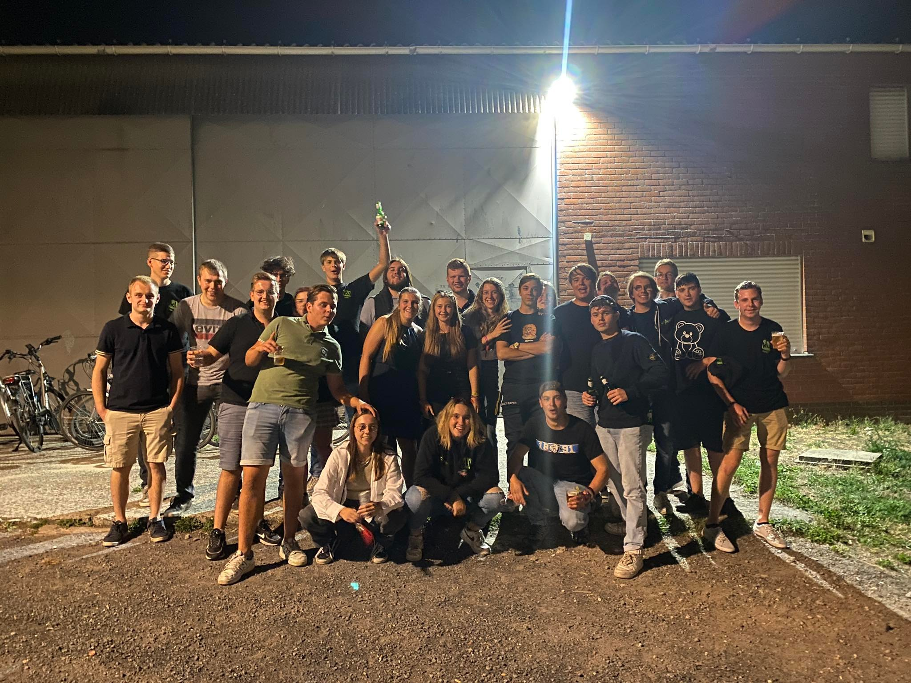
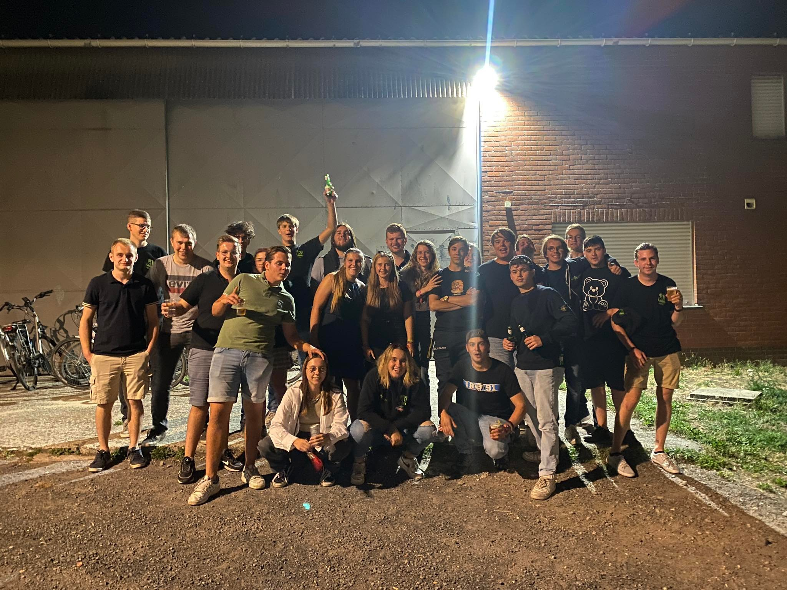

Warme Beenhesp 2022
KLJ Aalter presenteert op vrijdag 30 september een warme beenhespavond.
Perfect om het weekend mee in te zetten samen met familie en vrienden. Iedereen welkom vanaf 19u.
💶 18 euro à volonté voor volwassen, kinderen jonger dan 12 jaar betalen slechts 12 euro.
Kaarten verkrijgbaar via:
- Leden van KLJ Aalter
- Mail: info@kljaalter.be
- Telefonisch: 0471 36 76 61 (Stef Corijn)
Te reserveren tot woensdag 28 september.
📍 GOC Lotenhulle / Guldensporenplein 11, Aalter
Facebook evenement:
KLJ Aalter - Warme Beenhesp 2022
 

Facebook: KLJ Aalter
Youtube: KLJ Aalter
Stef Corijn: hoofdleider
0471 36 76 61
Perfect om het weekend mee in te zetten samen met familie en vrienden. Iedereen welkom vanaf 19u.
💶 18 euro à volonté voor volwassen, kinderen jonger dan 12 jaar betalen slechts 12 euro.
Kaarten verkrijgbaar via:
- Leden van KLJ Aalter
- Mail: info@kljaalter.be
- Telefonisch: 0471 36 76 61 (Stef Corijn)
Te reserveren tot woensdag 28 september.
📍 GOC Lotenhulle / Guldensporenplein 11, Aalter
Facebook evenement:
KLJ Aalter - Warme Beenhesp 2022
Foto van de maand
Links
Instagram: @kljaalterFacebook: KLJ Aalter
Youtube: KLJ Aalter
Contact
Email: info@kljaalter.beStef Corijn: hoofdleider
0471 36 76 61
Adres
Melkerijstraat 14 Lotenhulle/Aalter 9880